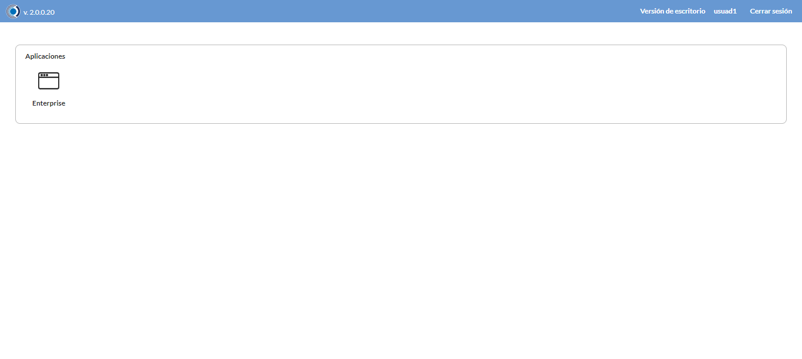

Desarrollado por : Area de Testing PWST
Fecha y hora de inicio : 2022-08-26 09:09:45
Duracion : 0:11:06.155097
Resultado : Total 8，Correctos 8 ，Taza de resultado 100.00%
Resumen 100.00% Errores 0 Fallidos 0 Correctos 8 Test realizados 8
| Caso de Prueba | Total | Correctos | Fallido | Error | Detalles | Captura del error |
| Empresas.Test: Escenario 1 de Empresas | 8 | 8 | 0 | 0 | Detalles | |
test |
pt1_1: 2022-08-26 09:09:46,876 - root - INFO - Se abre el chrome
2022-08-26 09:09:47,988 - root - INFO - Entra a la URL
2022-08-26 09:09:48,181 - root - INFO - Maximiza la pantalla
2022-08-26 09:09:51,249 - root - INFO - Cambia al frame
|
|
||||
test_000: Ingresa a la base de datos |
pt1_2: 2022-08-26 09:09:54,340 - root - INFO - Escribe el usuario
2022-08-26 09:09:54,443 - root - INFO - Escribe la contraseña
2022-08-26 09:09:54,598 - root - INFO - Se dio clic en el boton ingresar
2022-08-26 09:09:55,889 - root - INFO - Ejecutar Enterprise
2022-08-26 09:09:55,891 - root - INFO - Captura: C:\xampp\htdocs\versiones\automatizaciones\AutoPWST\01EMP\report\img screen：20220826_09_09_55.png
2022-08-26 09:10:00,120 - root - INFO - Cambia entre pestañas
|
 | ||||
test_001: Abre menu y ejecuta pantalla |
pt1_3: 2022-08-26 09:10:05,227 - root - INFO - Abre el menu completo
2022-08-26 09:10:18,214 - root - INFO - Abre la pantalla de Empresas
2022-08-26 09:10:18,278 - root - INFO - La pantalla ejecutada es Empresas
2022-08-26 09:10:21,293 - root - INFO - Captura: C:\xampp\htdocs\versiones\automatizaciones\AutoPWST\01EMP\report\img screen：20220826_09_10_21.png
2022-08-26 09:10:21,498 - root - INFO - Se presiona el boton 'Nuevo', para crear un nuevo registro.
|
|||||
test_002: Abre la ventana de nuevo y crear un registro |
pt1_4: 2022-08-26 09:10:26,590 - root - INFO - Se abrio la pantalla para el ingreso de un registro nuevo.
2022-08-26 09:10:26,646 - root - INFO - El campo 'Codigo' si se encuentra visible.
2022-08-26 09:10:26,687 - root - INFO - El campo 'Descrición' si se encuentra visible.
2022-08-26 09:10:26,732 - root - INFO - El campo 'Codigo Alternativo' si se encuentra visible.
2022-08-26 09:10:26,770 - root - INFO - El campo 'Codigo GLN' si se encuentra visible.
2022-08-26 09:10:26,809 - root - INFO - El campo 'Razón social' si se encuentra visible.
2022-08-26 09:10:26,850 - root - INFO - El campo 'Calle' si se encuentra visible.
2022-08-26 09:10:26,890 - root - INFO - El campo 'Esquinas' si se encuentra visible.
2022-08-26 09:10:26,941 - root - INFO - El campo 'Teléfonos' si se encuentra visible.
2022-08-26 09:10:26,983 - root - INFO - El campo 'R.U.C' si se encuentra visible.
2022-08-26 09:10:27,022 - root - INFO - El campo 'Estado' si se encuentra visible.
2022-08-26 09:10:27,060 - root - INFO - El campo 'Depto/Provincia' si se encuentra visible.
2022-08-26 09:10:27,098 - root - INFO - El campo 'Localidad' si se encuentra visible.
2022-08-26 09:10:27,139 - root - INFO - El campo 'Barrio' si se encuentra visible.
2022-08-26 09:10:27,183 - root - INFO - El campo 'Observaciones' si se encuentra visible.
2022-08-26 09:10:27,221 - root - INFO - El campo 'Resoluciones Fiscales' si se encuentra visible.
2022-08-26 09:10:27,262 - root - INFO - El campo 'Nro. Puerta' si se encuentra visible.
2022-08-26 09:10:27,343 - root - INFO - Ingresa el codigo del nuevo registro
2022-08-26 09:10:30,530 - root - INFO - Ingresa la descripción del nuevo registro
2022-08-26 09:10:33,657 - root - INFO - Ingresa el codigo alternativo del nuevo registro
2022-08-26 09:10:36,814 - root - INFO - Ingresa el codigo GLN del nuevo registro
2022-08-26 09:10:39,959 - root - INFO - Ingresa la Razón Social del nuevo registro
2022-08-26 09:10:43,125 - root - INFO - Ingresa la calle del nuevo registro
2022-08-26 09:10:46,281 - root - INFO - Ingresa la esquina 1 del nuevo registro
2022-08-26 09:10:49,432 - root - INFO - Ingresa la esquina 2 del nuevo registro
2022-08-26 09:10:52,586 - root - INFO - Ingresa el Telefono 1 del nuevo registro
2022-08-26 09:10:55,735 - root - INFO - Ingresa el Telefono 2 del nuevo registro
2022-08-26 09:10:58,852 - root - INFO - Ingresa el ruc del nuevo registro
2022-08-26 09:11:44,144 - root - INFO - Ingresa las Observaciones del nuevo registro
2022-08-26 09:11:50,298 - root - INFO - Captura: C:\xampp\htdocs\versiones\automatizaciones\AutoPWST\01EMP\report\img screen：20220826_09_11_50.png
2022-08-26 09:11:50,549 - root - INFO - Ingresa el Num de la puerta del nuevo registro
2022-08-26 09:11:53,668 - root - INFO - Se hace el cambio de pestaña para continuar con el registro nuevo
2022-08-26 09:11:56,784 - root - INFO - Se presiona el boton 'Nuevo', para crear un nuevo registro.
2022-08-26 09:12:01,874 - root - INFO - El campo 'Código' si se encuentra visible.
2022-08-26 09:12:01,913 - root - INFO - El campo 'Descripción' si se encuentra visible.
2022-08-26 09:12:01,951 - root - INFO - El campo 'Codigo alternativo' si se encuentra visible.
2022-08-26 09:12:02,036 - root - INFO - Ingresa el Codigo del nuevo registro
2022-08-26 09:12:05,189 - root - INFO - Ingresa la Descripcion del nuevo registro
2022-08-26 09:12:08,341 - root - INFO - Ingresa el Codigo alternativo del nuevo registro
2022-08-26 09:12:11,484 - root - INFO - Se hace el cambio de pestaña para continuar con el registro nuevo
2022-08-26 09:12:14,616 - root - INFO - Se presiona el boton 'Nuevo', para crear un nuevo registro.
2022-08-26 09:12:19,696 - root - INFO - El campo 'Tipo Documento' si se encuentra visible.
2022-08-26 09:12:19,735 - root - INFO - El campo 'Vías en BackOffice' si se encuentra visible.
2022-08-26 09:12:19,776 - root - INFO - El campo 'Vías en Mobile' si se encuentra visible.
2022-08-26 09:12:19,814 - root - INFO - El campo 'Descrpción de vías' si se encuentra visible.
2022-08-26 09:12:19,917 - root - INFO - Ingresa el Tipo Documento del nuevo registro
2022-08-26 09:12:23,065 - root - INFO - Ingresa las Vias Backoffice del nuevo registro
2022-08-26 09:12:26,199 - root - INFO - Ingresa las Vias Mobile del nuevo registro
2022-08-26 09:12:29,357 - root - INFO - Ingresa la Descripción Vias del nuevo registro
2022-08-26 09:12:32,486 - root - INFO - Se presiona el boton 'Guardar', para guardar el registro.
2022-08-26 09:12:37,598 - root - INFO - Se presiona el boton 'Guardar', para guardar el registro.
2022-08-26 09:12:42,727 - root - INFO - Se hace el cambio de pestaña para continuar con el registro nuevo
2022-08-26 09:12:45,814 - root - INFO - El campo 'Lunes' si se encuentra visible.
2022-08-26 09:12:45,851 - root - INFO - El campo 'Martes' si se encuentra visible.
2022-08-26 09:12:45,891 - root - INFO - El campo 'Miércoles' si se encuentra visible.
2022-08-26 09:12:45,930 - root - INFO - El campo 'Jueves' si se encuentra visible.
2022-08-26 09:12:45,968 - root - INFO - El campo 'Viernes' si se encuentra visible.
2022-08-26 09:12:46,008 - root - INFO - El campo 'Sábado' si se encuentra visible.
2022-08-26 09:12:46,047 - root - INFO - El campo 'Domingo' si se encuentra visible.
2022-08-26 09:13:04,817 - root - INFO - Se hace el cambio de pestaña para continuar con el registro nuevo
2022-08-26 09:13:07,898 - root - INFO - El campo 'Período Contable' si se encuentra visible.
2022-08-26 09:13:07,937 - root - INFO - El campo 'Desde' si se encuentra visible.
2022-08-26 09:13:07,977 - root - INFO - El campo 'Hasta' si se encuentra visible.
2022-08-26 09:13:08,157 - root - INFO - Ingresa la fecha Desde del nuevo registro
2022-08-26 09:13:11,342 - root - INFO - Ingresa la fecha Hasta del nuevo registro
2022-08-26 09:13:14,504 - root - INFO - Se da clic en el boton Guardar; se debe crear un nuevo registro.
|

|
||||
test_003: Repetir el registro creado anteriormente |
pt1_5: 2022-08-26 09:13:19,621 - root - INFO - Se presiona el boton 'Refrescar', para crear un nuevo registro igual al anterior.
2022-08-26 09:13:24,750 - root - INFO - Se presiona el boton 'Nuevo', para crear un nuevo registro igual al anterior.
2022-08-26 09:13:29,803 - root - INFO - Se abrio la pantalla para el ingreso de un registro nuevo.
2022-08-26 09:13:29,845 - root - INFO - El campo 'Codigo' si se encuentra visible.
2022-08-26 09:13:29,901 - root - INFO - El campo 'Descrición' si se encuentra visible.
2022-08-26 09:13:29,946 - root - INFO - El campo 'Codigo Alternativo' si se encuentra visible.
2022-08-26 09:13:29,985 - root - INFO - El campo 'Codigo GLN' si se encuentra visible.
2022-08-26 09:13:30,027 - root - INFO - El campo 'Razón social' si se encuentra visible.
2022-08-26 09:13:30,069 - root - INFO - El campo 'Calle' si se encuentra visible.
2022-08-26 09:13:30,112 - root - INFO - El campo 'Esquinas' si se encuentra visible.
2022-08-26 09:13:30,151 - root - INFO - El campo 'Teléfonos' si se encuentra visible.
2022-08-26 09:13:30,193 - root - INFO - El campo 'R.U.C' si se encuentra visible.
2022-08-26 09:13:30,234 - root - INFO - El campo 'Estado' si se encuentra visible.
2022-08-26 09:13:30,273 - root - INFO - El campo 'Depto/Provincia' si se encuentra visible.
2022-08-26 09:13:30,311 - root - INFO - El campo 'Localidad' si se encuentra visible.
2022-08-26 09:13:30,348 - root - INFO - El campo 'Barrio' si se encuentra visible.
2022-08-26 09:13:30,386 - root - INFO - El campo 'Observaciones' si se encuentra visible.
2022-08-26 09:13:30,442 - root - INFO - El campo 'Resoluciones Fiscales' si se encuentra visible.
2022-08-26 09:13:30,479 - root - INFO - El campo 'Nro. Puerta' si se encuentra visible.
2022-08-26 09:13:30,559 - root - INFO - Ingresa el codigo del nuevo registro
2022-08-26 09:13:33,781 - root - INFO - Ingresa la descripción del nuevo registro
2022-08-26 09:13:36,938 - root - INFO - Ingresa el codigo alternativo del nuevo registro
2022-08-26 09:13:40,076 - root - INFO - Ingresa el codigo GLN del nuevo registro
2022-08-26 09:13:43,231 - root - INFO - Ingresa la Razón Social del nuevo registro
2022-08-26 09:13:46,393 - root - INFO - Ingresa la calle del nuevo registro
2022-08-26 09:13:49,549 - root - INFO - Ingresa la esquina 1 del nuevo registro
2022-08-26 09:13:52,705 - root - INFO - Ingresa la esquina 2 del nuevo registro
2022-08-26 09:13:55,819 - root - INFO - Ingresa el Telefono 1 del nuevo registro
2022-08-26 09:13:58,985 - root - INFO - Ingresa el Telefono 2 del nuevo registro
2022-08-26 09:14:02,151 - root - INFO - Ingresa el ruc del nuevo registro
2022-08-26 09:14:47,311 - root - INFO - Ingresa las Observaciones del nuevo registro
2022-08-26 09:14:53,552 - root - INFO - Ingresa el Num de la puerta del nuevo registro
2022-08-26 09:14:56,672 - root - INFO - Se hace el cambio de pestaña para continuar con el registro nuevo
2022-08-26 09:14:59,783 - root - INFO - El campo 'Período Contable' si se encuentra visible.
2022-08-26 09:14:59,823 - root - INFO - El campo 'Desde' si se encuentra visible.
2022-08-26 09:14:59,862 - root - INFO - El campo 'Hasta' si se encuentra visible.
2022-08-26 09:15:00,034 - root - INFO - Ingresa la fecha Desde del nuevo registro
2022-08-26 09:15:03,203 - root - INFO - Ingresa la fecha Hasta del nuevo registro
2022-08-26 09:15:06,313 - root - INFO - Se da clic en el boton Guardar; se debe crear un nuevo registro.
2022-08-26 09:15:11,330 - root - INFO - Captura: C:\xampp\htdocs\versiones\automatizaciones\AutoPWST\01EMP\report\img screen：20220826_09_15_11.png
2022-08-26 09:15:11,565 - root - INFO - Se presiona el boton 'Cerrar', para cerrar el mensaje de duplicidad de llave primaria
2022-08-26 09:15:14,696 - root - INFO - Se presiona el boton 'Cerrar', para cerrar la ventana
|

|
||||
test_004: Modificar el registro |
pt1_6: 2022-08-26 09:15:18,789 - root - INFO - Se presiona el boton 'Refrescar', para crear un nuevo registro igual al anterior.
2022-08-26 09:15:28,436 - root - INFO - Se da clic en el registro creado, para proceder a modificarlo.
2022-08-26 09:15:31,690 - root - INFO - Ingresa la descripción del nuevo registro
2022-08-26 09:15:34,877 - root - INFO - Ingresa el codigo alternativo del nuevo registro
2022-08-26 09:15:38,056 - root - INFO - Ingresa el codigo GLN del nuevo registro
2022-08-26 09:15:41,246 - root - INFO - Ingresa la Razón Social del nuevo registro
2022-08-26 09:15:44,428 - root - INFO - Ingresa la calle del nuevo registro
2022-08-26 09:15:47,623 - root - INFO - Ingresa la esquina 1 del nuevo registro
2022-08-26 09:15:50,806 - root - INFO - Ingresa la esquina 2 del nuevo registro
2022-08-26 09:15:53,961 - root - INFO - Ingresa el Telefono 1 del nuevo registro
2022-08-26 09:15:57,127 - root - INFO - Ingresa el Telefono 2 del nuevo registro
2022-08-26 09:16:00,325 - root - INFO - Ingresa el ruc del nuevo registro
2022-08-26 09:16:45,516 - root - INFO - Ingresa las Observaciones del nuevo registro
2022-08-26 09:16:51,636 - root - INFO - Captura: C:\xampp\htdocs\versiones\automatizaciones\AutoPWST\01EMP\report\img screen：20220826_09_16_51.png
2022-08-26 09:16:51,932 - root - INFO - Ingresa el Num de la puerta del nuevo registro
2022-08-26 09:16:55,048 - root - INFO - Se hace el cambio de pestaña para continuar con el registro nuevo
2022-08-26 09:17:02,705 - root - INFO - Se da clic en el registro creado, para proceder a modificarlo.
2022-08-26 09:17:05,959 - root - INFO - Ingresa la Descripcion del nuevo registro
2022-08-26 09:17:09,127 - root - INFO - Ingresa el Codigo alternativo del nuevo registro
2022-08-26 09:17:12,252 - root - INFO - Se hace el cambio de pestaña para continuar con el registro nuevo
2022-08-26 09:17:19,907 - root - INFO - Se da clic en el registro creado, para proceder a modificarlo.
2022-08-26 09:17:23,150 - root - INFO - Ingresa el Tipo Documento del nuevo registro
2022-08-26 09:17:26,340 - root - INFO - Ingresa las Vias Backoffice del nuevo registro
2022-08-26 09:17:29,488 - root - INFO - Ingresa las Vias Mobile del nuevo registro
2022-08-26 09:17:32,673 - root - INFO - Ingresa la Descripción Vias del nuevo registro
2022-08-26 09:17:35,786 - root - INFO - Se presiona el boton 'Guardar', para guardar el registro.
2022-08-26 09:17:40,914 - root - INFO - Se presiona el boton 'Guardar', para guardar el registro.
2022-08-26 09:17:46,041 - root - INFO - Se hace el cambio de pestaña para continuar con el registro nuevo
2022-08-26 09:17:58,557 - root - INFO - Se hace el cambio de pestaña para continuar con el registro nuevo
2022-08-26 09:18:01,668 - root - INFO - Se presiona el boton 'Nuevo', para crear un nuevo registro.
2022-08-26 09:18:06,766 - root - INFO - El campo 'Fecha Autorización' si se encuentra visible.
2022-08-26 09:18:06,802 - root - INFO - El campo 'Serie' si se encuentra visible.
2022-08-26 09:18:06,840 - root - INFO - El campo 'Nro. Resolución' si se encuentra visible.
2022-08-26 09:18:06,878 - root - INFO - El campo 'Rango Correlativo' si se encuentra visible.
2022-08-26 09:18:17,548 - root - INFO - Ingresa el Num de la puerta del nuevo registro
2022-08-26 09:18:20,731 - root - INFO - Ingresa el Rango Inicio del nuevo registro
2022-08-26 09:18:23,858 - root - INFO - Ingresa el Rango Fin del nuevo registro
2022-08-26 09:18:26,976 - root - INFO - Se da clic en el boton Guardar; se debe modificar la informacion del registro.
2022-08-26 09:18:32,098 - root - INFO - Se da clic en el boton Guardar; se debe modificar la informacion del registro.
|
|||||
test_005: Eliminar el registro creado |
pt1_7: 2022-08-26 09:18:37,172 - root - INFO - Se presiona el boton 'Refrescar', para proceder a eliminar el registro.
2022-08-26 09:18:46,806 - root - INFO - Se da clic en el registro creado, para proceder a eliminarlo.
2022-08-26 09:18:49,925 - root - INFO - Se hace el cambio de pestaña para continuar con el registro nuevo
2022-08-26 09:18:57,536 - root - INFO - Se da clic en el registro creado, para proceder a modificarlo.
2022-08-26 09:19:05,657 - root - INFO - Se presiona el boton 'Eliminar', para eliminar el registro.
2022-08-26 09:19:05,759 - root - INFO - Se da clic en el boton Guardar; se debe modificar la informacion del registro.
2022-08-26 09:19:15,374 - root - INFO - Se da clic en el registro creado, para proceder a eliminarlo.
2022-08-26 09:19:18,483 - root - INFO - Se hace el cambio de pestaña para continuar con el registro nuevo
2022-08-26 09:19:26,123 - root - INFO - Se da clic en el registro creado, para proceder a modificarlo.
2022-08-26 09:19:29,233 - root - INFO - Se hace el cambio de pestaña para continuar con el registro nuevo
2022-08-26 09:19:36,861 - root - INFO - Se da clic en el registro creado, para proceder a modificarlo.
2022-08-26 09:19:44,983 - root - INFO - Se presiona el boton 'Eliminar', para eliminar el registro.
2022-08-26 09:19:45,118 - root - INFO - Se da clic en el boton Guardar; se debe modificar la informacion del registro.
2022-08-26 09:19:50,229 - root - INFO - Se da clic en el boton Guardar; se debe modificar la informacion del registro.
2022-08-26 09:19:59,854 - root - INFO - Se da clic en el registro creado, para proceder a eliminarlo.
2022-08-26 09:20:02,978 - root - INFO - Se hace el cambio de pestaña para continuar con el registro nuevo
2022-08-26 09:20:10,602 - root - INFO - Se da clic en el registro creado, para proceder a modificarlo.
2022-08-26 09:20:18,725 - root - INFO - Se presiona el boton 'Eliminar', para eliminar el registro.
2022-08-26 09:20:18,856 - root - INFO - Se da clic en el boton Guardar; se debe modificar la informacion del registro.
2022-08-26 09:20:28,475 - root - INFO - Se da clic en el registro creado, para proceder a eliminarlo.
2022-08-26 09:20:36,579 - root - INFO - Se presiona el boton 'Eliminar', para eliminar el registro.
2022-08-26 09:20:36,581 - root - INFO - Captura: C:\xampp\htdocs\versiones\automatizaciones\AutoPWST\01EMP\report\img screen：20220826_09_20_36.png
2022-08-26 09:20:36,784 - root - INFO - Se confirma el eliminado del registro
2022-08-26 09:20:41,879 - root - INFO - Se presiona el boton 'Refrescar', para crear un nuevo registro igual al anterior.
2022-08-26 09:20:46,990 - root - INFO - Se presiona el boton 'Cerrar', para cerrar la pantalla de Categorias Fiscales.
|
|||||
test_006: Cerrar_Navegador |
pt1_8: 2022-08-26 09:20:51,245 - root - INFO - Se cierra chrome
|
|
||||
| Caso de prueba | 8 | 8 | 0 | 0 | Taza de resultado：100.00% | |